Neural Networks
Overview
Neural networks are a type of machine-learning model loosely based on human-brain neurons and neural architectures. The underlying data structure is a graph, where the 'neurons' are nodes, and the connections beteween them (synapses) are edges. Each neuron receives input as a real number, and computes output based on its 'activation function.' Edges are weighted, scaling the output of the neuron before it is passed to the next neuron. Neurons are grouped into layers, with the input layer mirroring the input data features, hidden layers performing intermediate computations, and the output layer producing the final predictions in the scale of the target output, i.e. a single scalar for a binary classifier, or a vector for multiple-classes, etc.

One subtype of neural network modeling is the Graph Neural Network (GNN). This allows data with inherent structural or spatial relationships to be modeled using that structure, instead of the inherent positions of data in the input data matrix. In this project, the data being modeled is county-level data in the US, and certain features (like pesticide application) presumably have geographical relationships. To preserve and leverage these inherent relationships, a graph representation of the data (i.e. an adjacency matrix) is constructured prior to training/testing, and the GNN can then leverage this adjacency information to incorporate information from neighboringcounties according to the graph structure. Specifically, this project uses graph convolutional networks (GCNs); in standard Convolutional Neural Network, convolutions occur over spatially local regions as defined by the actual locations of the data in the matrix, i.e. the neighboring rows and columns. This makes sense when the data is directly spatially related, like pixels in images. A GCN allow this spatial relationship to be separated from the actual data matrix, and use a graph structure to describe the actual relationships. The graph connectivity is input to the GCN along with the feature data, acting as a sort of reference for which nodes have which neighbors, and what the relative weights of each 'neighboring' feature set should be.
For this project, GCNs are used to build a cancer-risk classifier for counties based on pesticide application data, smoking, education, and employment features. During clustering performed on geographic and socioeconomic features, some clusters emerged that suggested the presence of distinct geographic groupings beyond just the socioeconomic indicators. This motivated the choice to use a graph-based neural network to explicitly model the geographic relationships between counties so as to preserve any signal in the geographic structure that might be relevant for predicting cancer risk. For additional biological motivation, 7 cancer subtypes are used as separate targets, so 7 models are trained, one for each subtype. Ultimately, the model needs to produce a classification prediction; to do this, a threshold is applied to the real-number output reprsenting predicted incidence rate to convert it into a binary classifier; this then represents whether the county is predicted to be high or low cancer risk for the given subtype. This incidence threshold is defined using median of the incidence rates in the training data, i.e. high = above the median, low = below the median (what actually constitutes high risk may be more of a medical and public health question- calibrating this threshold requires more intensive domain research).
Note on datasets and disease latency: Cancer is known to take potentially many years to develop after exposure to carcinogens or other risk factor. This latency complicates modelling efforts; in this project, state cancer incidence datasets contain data from 2018-2022. The pesticide application data is from 2002, and socioeconomic data is aggregated over the 2000- 2010. Smoking data is from 2025 and thus represents a future time point relative to the cancer incidence data. IT seems reasonable to conclude that smoking rates are relatively stable with regard to geography, and have decreased over time, so any expected change would simply lower the overall signal and not fundamentally alter the geographic patterns that the model is attempting to learn. However this temporal mismatch is a limitation of the dataset and should be considered when interpreting model results.
Data Prep
Seven individual cancer subtype county-level incidence datasets were downloaded from the State Cancer Profiles website: Lung, Non-Hodgkins Lymphoma Colorectal, Breast, Leukemia, Prostate, and Bladder. While most of the raw data from each source has been already cleaned, there was significant work to do to properly merge the datasets together, scale and impute properly, and ensure that the final dataset was suitable for input into the graph convolutional network. In this case, incidence rates by county serve as the 'labels', and thus each of the 7 cancer subtype datasets needed to be merged into to the feature set. First, the pesticide application by county data was read in and merged with overall cancer rate incidence data by county for some EDA; later this ended up being dropped to avoid data leakage from the overall cancer rates. Then, each of the 7 cancer subtype incidence datasets were read in and merged on county. These 7 datasets each had missing values - some were "*", representing suppressed data when total cases were too low to provide stable reporting, and some were simply blank, and some were strings "P1-note", which indicated that the data was not reported (this was the case for all of Kansas).{kind=link}
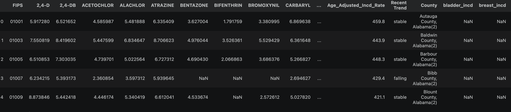
To handle missing pesticide data, the US Census county adjacency information was read in and used to calculate a mean for any missing county based on its neighboring counties to retain as much geospatial signal as possible (using the supplied border lengths as weights). Next, all the cancer types were merged with the pesticide data using the "FIPS" county code column to join by county. Then, socioeconomic data from the USDA economic research service was read in, including unemployment rates by county, and various measures of education level. Smoking rate data was read in from the CDC PLACES database. All but two of the education features were dropped to avoid redundancy. Missing values were imputed by taking the mean for each feature. These data were joined with the main dataframe on FIPS. Features were then standardized. The prepared training data can be downloaded here. Finally, the features were transformed into a PyTorch tensor data structure as required for input to the neural net, and the county adjancency list was converted into a PyTorch tensor as well to provide the graph structure for the neural network. The labels were created by thresholding the numeric incidence rates into boolean high or low incidence indicators- so the actual labels themselves are ultimately just a boolean vector with 0 for low incidence counties, 1 for high, and NaN for masked nodes (missing counties in the incidence dataset). With the data prepared, a train/test split was created for each cancer subtype by randomly select disjunct sets of indices for which data was present for each cancer type, yielding two vectors containing the indicies:
{kind=link}
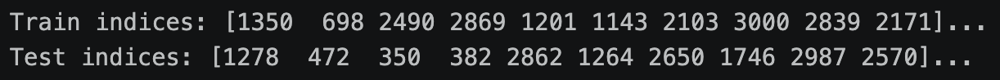
Code
The code for this project can be found here. The HTML rendering of the jupyter notebook is here.Results
{kind=link}
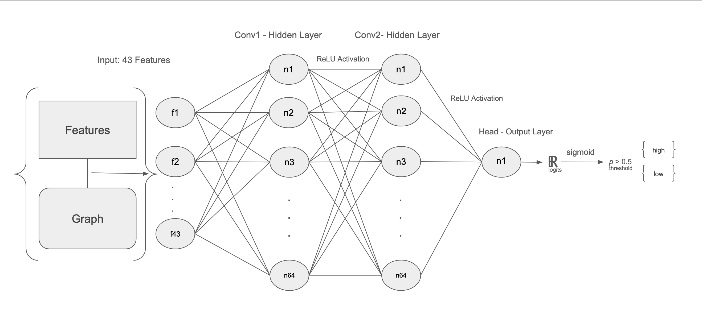
All classifiers performed meaningfully better than random chance (all AUCs are above 0.5, see below table). Lung cancer classification performed the best, possibly due to the extremely strong link between smoking and lung cancer.
Accuracy and AUC for each classifier:
| Cancer type | Accuracy | AUC |
|---|---|---|
| NHL | 0.643 | 0.687 |
| Lung | 0.764 | 0.837 |
| Bladder | 0.698 | 0.754 |
| Prostate | 0.687 | 0.765 |
| Leukemia | 0.577 | 0.612 |
| Colorectal | 0.651 | 0.702 |
| Breast | 0.632 | 0.688 |
Overall comparison of classifier accuracy by cancer type:
{kind=link}
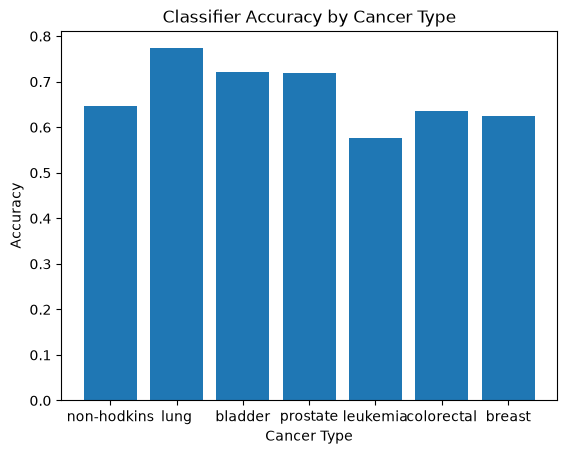
Training loss progression by epoch is shown here for each cancer type classifer along with the final confusion matrix:
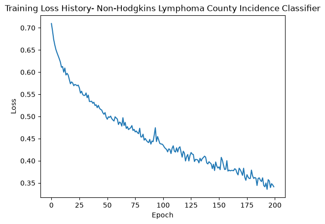
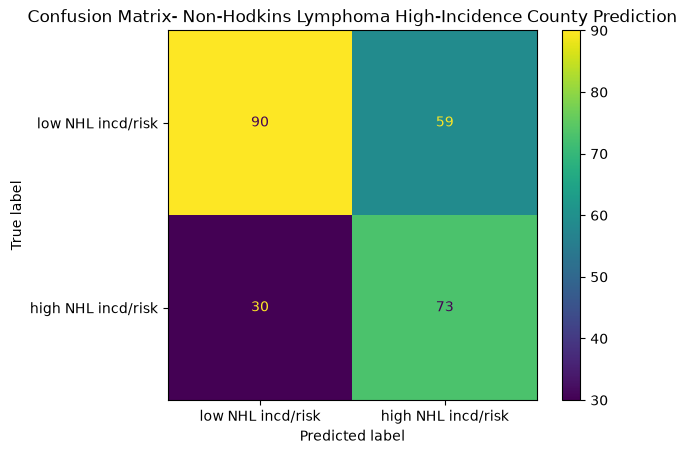
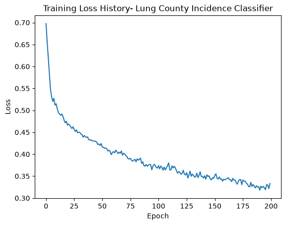
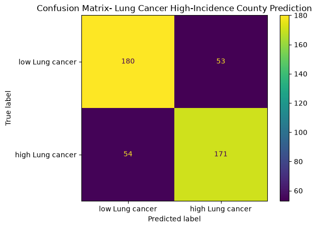
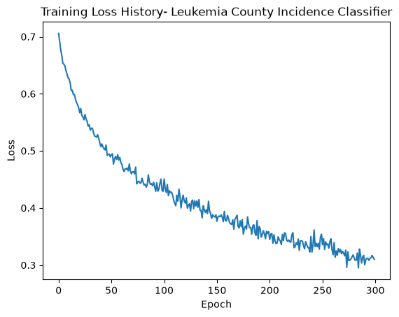
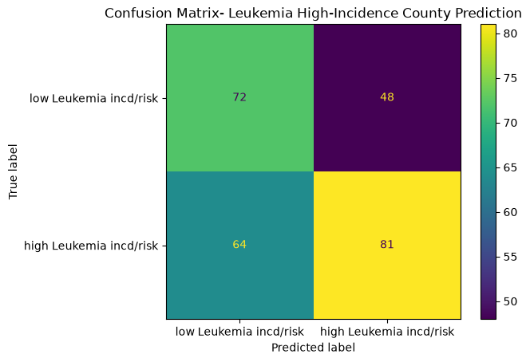
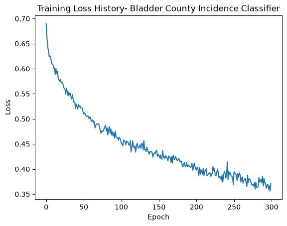
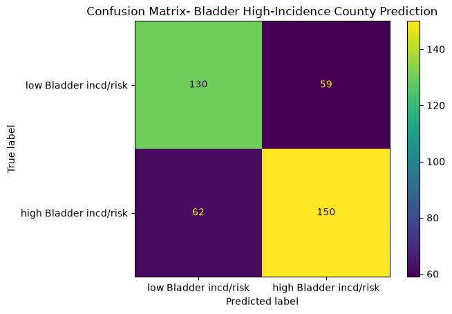
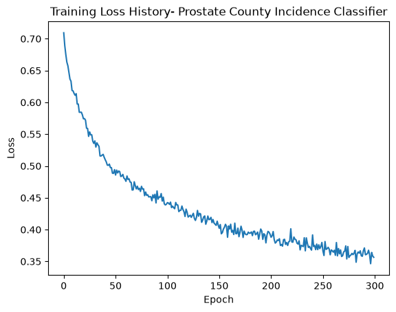
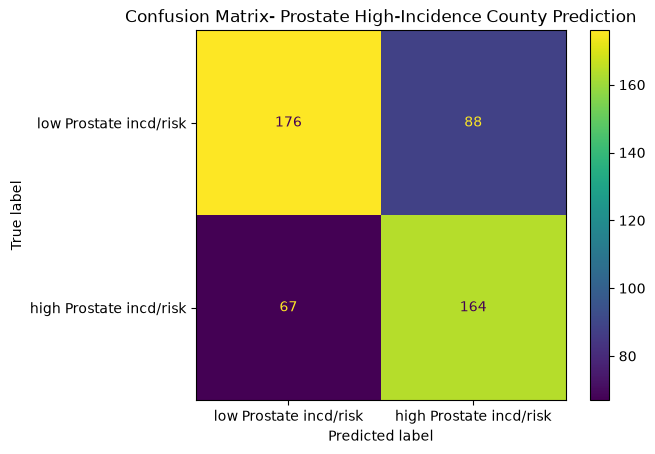
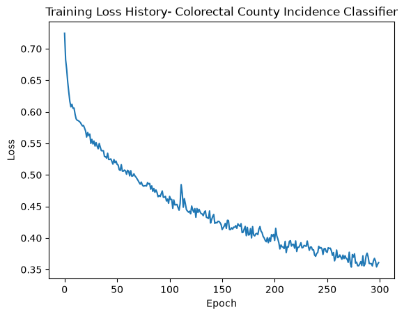
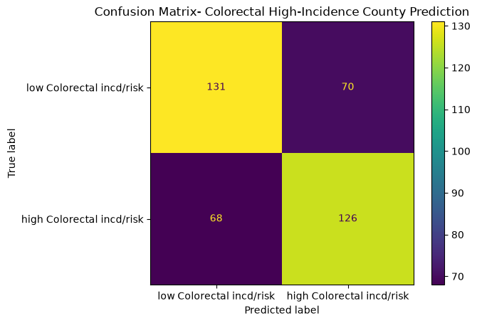
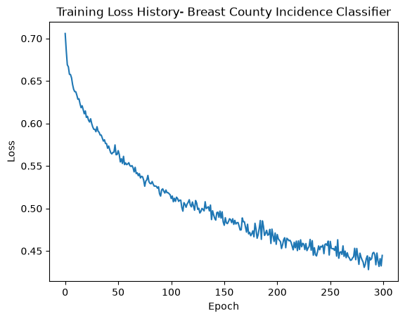
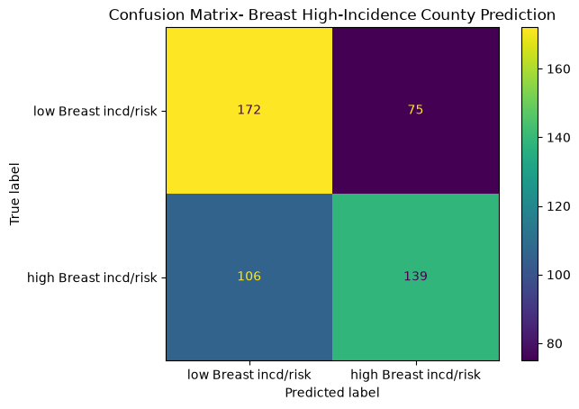
All of the training runs showed appropriate loss progression, indicating successful learning during training. Initial training at 200 epochs showed steady decreases; increasing to 300 epochs showed the gradient flattening out, indicating approaching convergence. The confusion matrices are interesting, and show differing ratios of false postiives and negatives. For example, Lung and Colorectal cancer show fairly balanced errors rates, while Non-Hodgkin's Lymphoma shows almost double the number of false positives vs false negatives, and breast cancer has about 50% false negatives to false positives. Sometimes the model is over-reporting high risk, and sometimes it underreports. These different scenarios suggest that each separate type classifier might benefit from threshold calibration, depending on its ratio and the desired goals/ relative costs.
Example visualization of county predictions for Lung cancer:
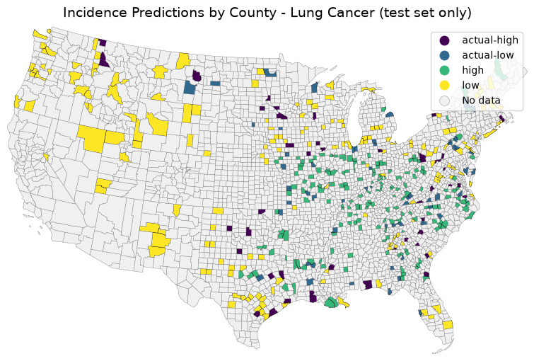
Conclusions
These results are fairly interesting and show that the neural net was able to derive some useful signal from the data for classifying rates for each type of cancer, though performance varies. Lung cancer performed the best, possibly because of the inclusion of smoking rates as a feature, for which would be expected the strongest biological connection to cancer risk. While not specifically testing a hypothesis with this model, the implied question is whether the neural net can capture complex and non-linear relationships between cancer incidence and pesticide exposure, education level, unemployment, and smoking rates. Each of these feature types is not only a proxy for many other features- e.g. unemployment affects access to health care and nutrition, and education level affects health literacy and behaviors, making the relationships complex and indirect- but also may simply indicate the presence of other unmeasured factors, correlations, or causal elements. Overall, these results suggest that the neural net is able to pick up on some meaningful patterns, but careful interpretation and further study would be needed to understand the underlying relationships. While there are established correlations between socioeconomic disadvantage and higher incidence of health issues, the clustering analysis showed some geographic patterns that may have indicated the presence of other factors, and/or non-linear relationships.Although the accuracy of the classifiers is certainly not high enough to indicate any strong relationships or useful predictive power, it does confirm that there is some signal in the data, and suggests some avenues for further study. Pesticides interact with the environment and human health in many biological and chemical ways, not to mention other important factors that maybe simply be correlated with pesticide use. For example, Propiconazole is a fungicide used for turfgrasses. It is a known endocrine disruptor, which may have indirect influence on cancer risk, but also may act as a proxy for populations that are more likely to live in areas with large amounts of high turfgrass- such as golf communities. Propiconazole is the strongest correlative feature in the set for prostate cancer; perhaps it is just a proxy for areas that have aging male populations? This is just one example of how a feature may appear important, but careful interpretation is needed to understand what it truly represents. As such, this model may serve to raise questions, but sorting out more detailed causal effects and confounding factors is immensely intensive. With further investigation, these patterns could be better understood and potentially linked to specific features or interactions that the neural net is capturing. To investigate the model performance thoroughly, additional experiments, ablation studies, and feature importance analyses would be necessary to better understand what the model has learned and why it performs as it does. PyTorch provides tools to facilitate such analyses, including ways to inspect model weights, gradients, and feature contributions, which would be useful in this context.
Another challenge with this particular modeling approach is that the number of samples is far below the ideal amount of data for effective neural net modeling, with just one record per county. Either higher-resolution data within each county, or pseudo-replication to increase the effective number of samples (e.g. as features change over time) would be needed to better support neural net training and avoid overfitting.